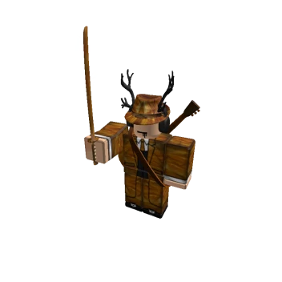

Welcome to my Portfolio
IT GeneralistCyberSecurity & Ethical Hacking - Polyglot Programming - System and Network Administration
ABOUT ME
Hello there, I am Phylixius.
I've been an Information and Communication Technology enthusiast from the day I was born.
My first computer was a Windows machine, that I was always amazed of, everytime I went on it and I kept discovering new subjects and functions. I always like being on there and, ofcourse, playing games on it.
When I first played the game Roblox at the time I was really young, I was always wondering where these games came from. Did Roblox made them? Did they hire other companies? Is it User Generated?
I quickly discovered how they were made and wanted to make my own game, not to make money or to gain players, just to see how it works and what you can do and explore a bit.